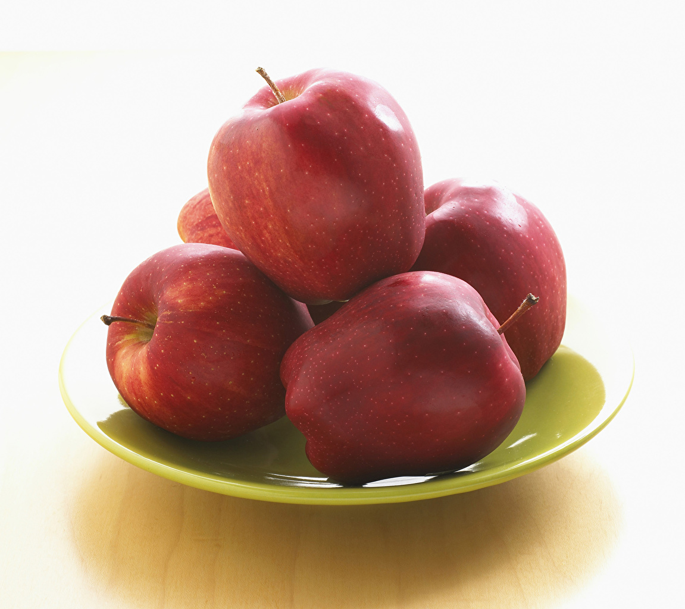

Полученный с его помощью кефир являпется уникальным лечебным препаратом, помогающим бороться с аллергией, гипертонией, язвенной болезнью желудка и двеннадцатиперстной кишки. Его употребление нормализует кишечную микрофлору. Кефир, получаемый в результате жизнедеятельности гриба, общее оздоровительное действие и стимулирует иммунитет.
 Настой тибетского молочного гриба снижает вес при ожирении. Весь его секрет в том, что он преобразует жиры в более простые соединения, которые затем сам же и выводит из организма человека. Для того чтобы похудеть, следует пить настой тибетского молочного гриба ежедневно через полчаса после еды и один - два раза в неделю устраивать разгрузочные дни.